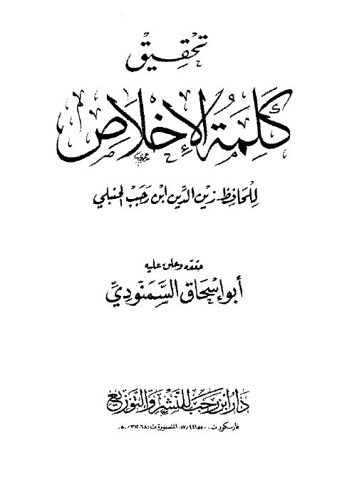
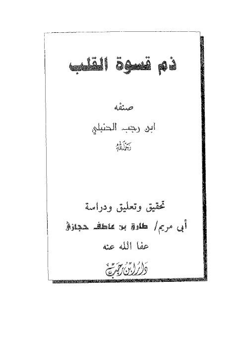
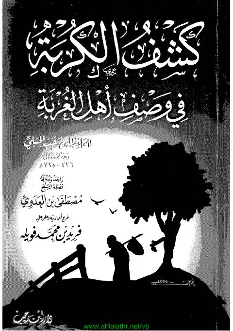
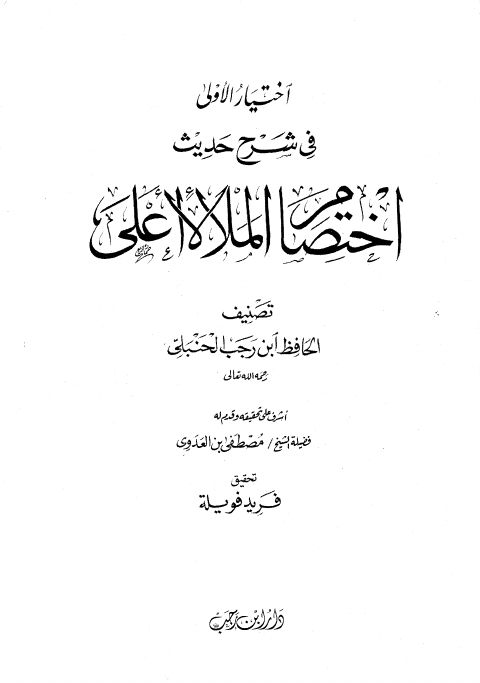

تحقيق كلمة الإخلاص تحقيق كلمة الإخلاص زين الدين ابن رجب الحنبلي
ذم قسوة القلب ذم قسوة القلب ابن رجب الحنبلي
كشف الكربة في وصف أهل الغربة كشف الكربة في وصف أهل الغربة بن رجب الحنبلي
اختيار الأولى في شرح حديث اختصام الملأ الأعلى- ت فويلة اختيار الأولى في شرح حديث اختصام الملأ الأعلى- ت فويلة عبد الرحمن البغدادي بن رجب الحنبلي